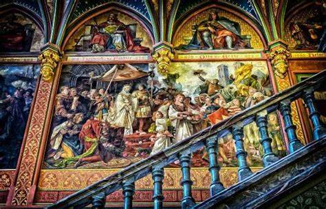
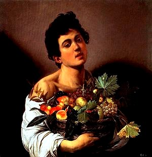
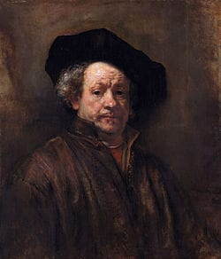
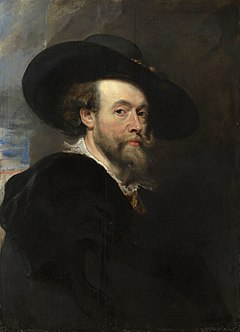
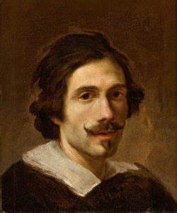

Origens da Arte Barroco
A "Arte Barroco" é um movimento cultural que emergiu das comunidades marginalizadas ao redor do mundo. Essa forma de expressão artística é intrinsecamente ligada à vida nas favelas, guetos e áreas urbanas desfavorecidas. Neste artigo, exploraremos em detalhes a história, a influência e o significado da Arte Barraco, destacando sua importância na cultura contemporânea.
O Barroco emergiu em uma época de profundas mudanças na Europa. A Reforma Protestante e a Contrarreforma Católica criaram um ambiente de fervor religioso e rivalidade entre as igrejas. A descoberta de novos territórios em todo o mundo trouxe uma riqueza inédita para as nações europeias, estimulando o mecenato artístico. Essa combinação de fatores históricos e sociais ajudou a moldar o estilo Barroco.
Características da Arte Barroca
O Barroco é conhecido por sua ênfase na emotividade, no dinamismo e na grandiosidade. As características-chave incluem: Dramatismo e Emoção: O Barroco frequentemente representava cenas dramáticas e emocionantes. As expressões faciais e gestos das figuras retratadas eram intensos, transmitindo uma ampla gama de sentimentos. Movimento e Dinamismo: O uso de diagonais, curvas e linhas onduladas nas composições dava uma sensação de movimento e energia às obras. Detalhes e Realismo: Os artistas Barrocos eram conhecidos por sua habilidade em retratar detalhes minuciosos, tanto em figuras humanas quanto em objetos. Contraste de Luz e Sombra: O Barroco introduziu o uso dramático do chiaroscuro, a técnica de contrastar luz e sombra para criar profundidade e drama nas pinturas.
Principais Artistas Barrocos
 Caravaggio (1571-1610): Este mestre do chiaroscuro é famoso por suas cenas realistas e vívidas, frequentemente com temas religiosos.
 Rembrandt (1606-1669): Embora tenha trabalhado principalmente na Holanda, Rembrandt contribuiu para o Barroco com suas pinturas autorretratadas e domínio do chiaroscuro.
 Peter Paul Rubens (1577-1640): Rubens, um pintor flamengo, é conhecido por suas obras de grande escala, cheias de ação e sensualidade.
 Gian Lorenzo Bernini (1598-1680): Este escultor italiano era mestre em criar esculturas que pareciam fluir em movimento, como a famosa "Êxtase de Santa Teresa".
Arquitetura Barroca
O Barroco também deixou sua marca na arquitetura, com destaque para igrejas ornamentadas, fachadas elaboradas e o uso de colunas salomônicas.Música Barroca
Compositores como Johann Sebastian Bach, George Frideric Handel e Antonio Vivaldi produziram algumas das obras musicais mais célebres da história durante o período Barroco, caracterizadas por suas complexas composições, ornamentações e emotivas interpretações.Legado e Influência
O Barroco teve um impacto profundo na arte subsequente, influenciando movimentos como o Rococó e o Neoclassicismo. Sua ênfase na emoção, na teatralidade e na maestria técnica continua a ser uma fonte de inspiração para artistas contemporâneos. Além disso, sua herança pode ser vista em muitos aspectos da cultura visual e musical moderna.
Conclusão
O período Barroco é uma parte fascinante da história da arte que capturou a complexidade da condição humana em um mundo em constante mudança. Suas características únicas e a genialidade de seus artistas fizeram do Barroco um dos movimentos mais influentes e duradouros da história da arte, deixando um legado que ainda ressoa nos dias de hoje.